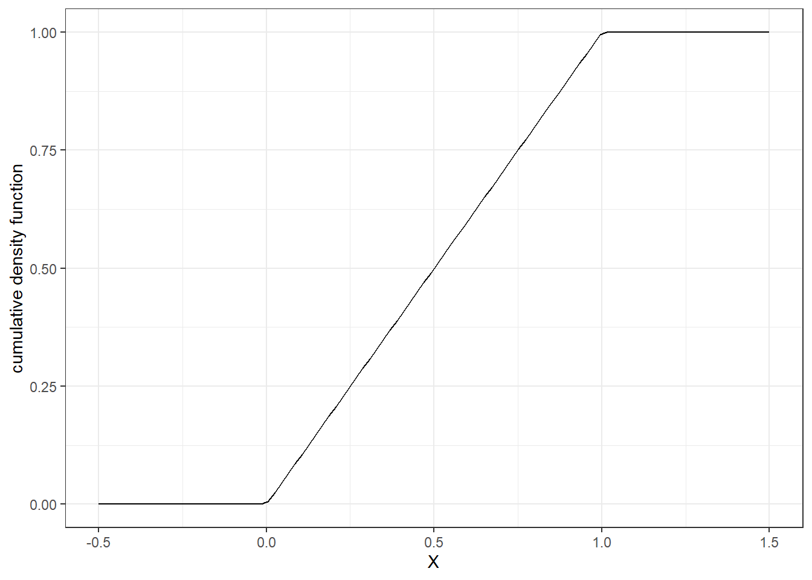
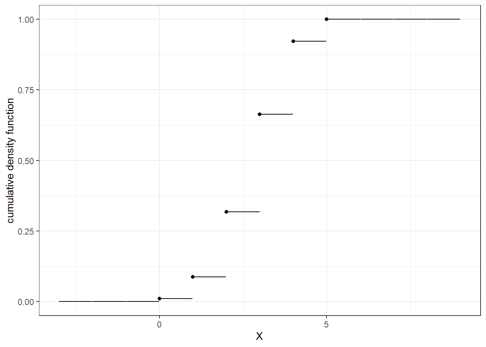
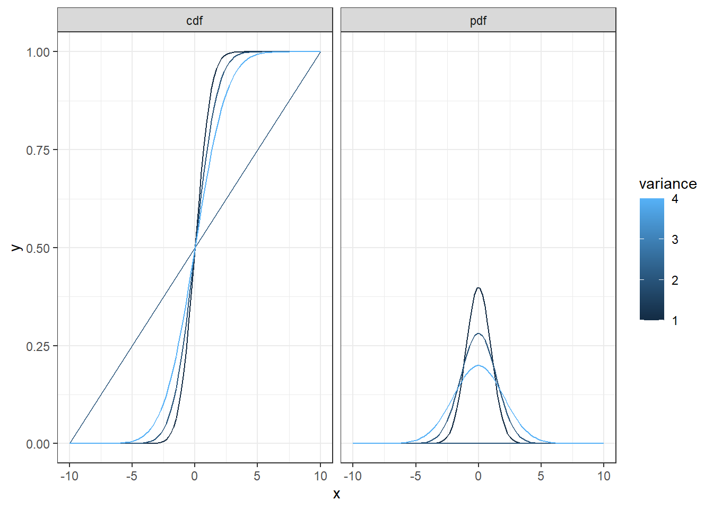

3 Review of some mathmatical concepts
Before getting into the more interesting material, it is important that we are all on the same page in terms of base knowledge. While I hope that there are parts of the course coming up that you can blast through with great understanding and intuition, the reality is that there are a few things that you will need to be able to do in your sleep very early on in the course. I may cover these in class, but please make sure you can do them as soon as possible.
3.1 Summation
In Econometrics, we can’t avoid adding things up. For example, when we compute a sample mean, we add up all the values in the sample, and divide by the sample size. In practice, we will get our computer to do the heavy lifting for us, but we need to understand what it’s doing, and have some notation to make this more compact. For one thing, id we are computing a sample mean, our hope is that we have lots of observations, and so we will need to add a lot of things up. It is cumbersome, for example, to write the sum of integers between 1 and 10 (inclusive), as: \[\begin{align} 1+2+3+4+5+6+7+8+9+10=55 \end{align}\] Alternatively, we can write: \[\begin{align} \sum_{k=1}^{10} k&=55 \end{align}\] We can read the above equation as follows:
- The summation symbol “\(\sum\)” (Greek capital sigma) tells us that we are adding things.
- The “\(k=1\)” underneath the summation symbol tells us that we are using \(k\) as an index, and we start with \(k=1\).
- The “10” above the summation symbol tells us that we stop summing when we get to 10 (inclusive).
We can, and will, get more sophisticated than this. For example: \[\begin{align} \sum_{k=1}^42 k^2&=2\times 1^2+2\times2^2+2\times 3^2+4\times 2^2\\ \sum_{k=1}^{12} \frac{k-1}{k}&=\frac{0}{1}+\frac{1}{2}+\frac{2}{3}+\ldots+\frac{11}{12}\\ \sum_{l=1}^3\sum_{k=1}^l lk&=1\times1+2\times1+2\times2 + 3\times 1+3\times2+3\times 3 \end{align}\] Note that in the last equation, this is a double summation. The index of the leftmost summation (\(l\)) appears in the rightmost summation as the stopping point for index \(k\).
The above examples are instructive, but not particularly useful. We are usually interested in adding up a whole lot of things, so we need some notation for “a whole lot of numbers.: To do this, let’s start with some notation for an arbitrary, indexed number, \(x_k\). You can interpret this as the \(k\)th number in a set of numbers. We can denote”a whole lot of numbers”, formally a “set of numbers”, as: \[\begin{align} \{x_k\}_{k=1}^K &= \{x_1, x_2, \ldots, x_K\} \end{align}\] That is, we have a set of \(K\) (a positive integer) numbers, which we index by \(k=1, 2,\ldots, K\).
Here’s an example. My drive to work involves driving the following distances, in miles (each distance is the drive distance between turns on Google Maps): \[\begin{align*} &x_1 = 0.3,\quad &x_2 = 1.4,\quad &x_3 = 0.1,\quad &x_4 = 0.5,\quad &x_5 = 0.0,\quad\\ &x_6 = 1.8,\quad &x_7 = 4.2,\quad &x_8 = 0.3,\quad &x_9 = 3.4,\quad &x_{10} = 1.8,\quad\\ &x_{11} = 0.2,\quad &x_{12} = 0.8,\quad &x_{13} = 0.2,\quad &x_{14} = 0.1,\quad &x_{15} = 0.1\quad \end{align*}\] We could denote this dataset as \(\{x_t\}_{t=1}^{15}\), and then calculate: \[\begin{align*} \sum_{t=1}^{15} x_t&=15.2\ \mathrm{miles}&\quad \text{total distance}\\ \sum_{t=1}^3x_t&=1.8\ \mathrm{miles}&\quad \text{ distance to 3rd turn}\\ \sum_{t=10}^{15}x_t&=3.2\ \mathrm{miles}&\quad \text{ distance left after making 9 turns}\\ \sum_{t=1}^{15} x_t^2&=38.8\ \mathrm{miles}^2&\quad \text{total squared distance (because why not?)}\\ \end{align*}\] Note the change in units in the last summation.
There are some useful properties of sums. To begin with, multiplying every component of a sum by a constant is the same as multiplying the final value by the constant. That is (see Bailey, Appendix A): \[\begin{align} \sum_{i=1}^N\beta X_i&=\beta\sum_{i=1}^NX_i \end{align}\] Suppose, for example, that we wanted to report the total distance above, but in a more widely-accepted unit of measurement. Knowing that 1 mile \(=\) 1.6 km (accurate to 1 decimal place), we could do this by computing: \[\begin{align*} \sum_{t=1}^{15}x_t\ \mathrm{miles}\times1.6\frac{\mathrm{km}}{\mathrm{mile}}=0.3\times1.6+1.4\times 1.6+\ldots \end{align*}\] alternatively, we would be smarter and use this result: \[\begin{align*} \sum_{t=1}^{15}x_t\ \mathrm{miles}\times1.6\frac{\mathrm{km}}{\mathrm{mile}}=1.6\frac{\mathrm{km}}{\mathrm{mile}}\sum_{t=1}^{15}x_t\ \mathrm{miles}=1.6\frac{\mathrm{km}}{\mathrm{mile}}\times 15.4 \mathrm{miles}=24.3\ \mathrm{km} \end{align*}\] i.e. \(\beta=1.6\frac{\mathrm{km}}{\mathrm{mile}}\). Note here that I made sure the unit conversion was correct by writing down the units as well as the numbers. If it’s all done correctly, the units you are trying to get rid of should cancel.
Of course, I would never want you to waste your time doing such a menial task by hand. If you really wanted to compute these, let your computer do it!
## [1] 15.2## [1] 1.8## [1] 3.2## [1] 38.82## [1] 24.323.2 Describing random variables
There are many ways to categorize random variables, and we’ll get in to a lot of them during this course. For the moment, we will begin by introducing two important types of random variables: discrete and continuous. These do not constitute an exhaustive set (i.e.~I could show you some pathological examples that are neither discrete nor continuous), but cover pretty much everything we will be interested in. The distinction between discrete and continuous is important because it tells us how we will (or at least should) analyze our data (for example, see Chapter 12 of Bailey (2019)).
We can tell these types apart by the random variable’s support. This, loosely, is the set of values that the random variable could possibly take on. That is, let \(\mathcal S\) be the support of a random variable \(X\). If, say, \(3\in\mathcal S\), then it is possible that \(X\) could take on the value 3. If \(3 \notin \mathcal S\), then \(X\) could never be equal to 3.
3.2.1 Discrete random variables
Discrete random variables have countable supports. Formally, this means that we can assign an integer to every value that the random variable could take on. In fact, discrete random numbers are often stored as integers, even if assigning them a number does not add any value to the problem. Here are some examples of discrete random variables:
- The outcome of a coin toss. We could record this as Heads \(=1\) and Tails \(=0\). Hence the support is \(\{0,1\}\)
- The number of days with rain in Toledo, OH in the next year. As long as it is not a leap year, the support is \(\{0,1,2,\ldots,365\}\).
- The number of coin tosses made until four heads have been observed. It would be impossible to toss the coin fewer than 4 before this event occurs, and a particularly unlucky individual could potentially end up doing this for ever, so the support is \(\{4, 5, 6, \ldots, \infty\}\).
- The name of the first player in the Collingwood Football Club to kick a goal in the last round of the Australian Football League 2017 season. Since at the time of writing, the 2017 AFL season was well underway, the support for this would be the list of players on the roster: \(\{\text{Travis Cloke}, \text{Dane Swan}, \text{Scott Pendlebury},\ldots\}\). However one may find it practical to handle data by assigning integers to these names (basically, computers like numbers more than strings): \(\{1=\text{Travis Cloke}, 2=\text{Dane Swan}, 3=\text{Scott Pendlebury},\ldots\}\). Additionally, since it is possible that Collingwood will have a particularly terrible game, one should also assign “nobody” to this support.
3.2.2 Continuous random variables
Continuous random variables have interval supports (or collections of intervals). Note that all of the above examples of discrete random variables fail this test. Examples of continuous random numbers include:
- The total precipitation in Toledo, OH between Jan 1st and Dec 31st next year, in millimeters.
- The time between now and when the next asteroid hits earth.
- Your bank balance (note that strictly speaking, this is discrete random variable, because it is an integer multiple of $0.01. however at some point it is reasonable to claim that a variable is approximately continuous and hence can be treated as continuous).
3.3 Completely describing random variables
If all we had in our toolbox was discrete'' andcontinuous’’, we would not be able to describe random variables very well. Fortunately, we can do much better than this. To begin with, there is the cumulative density function, which completely captures anything you may want to know about a single random variable. If we know that the variable is either continuous or discrete, we can use either a probability mass function or probability density function, which also characterize the variable completely (once we know that it is either continuous or discrete). Finally, we can summarize particular aspects of the random variable with quantities such as mean, variance, median, etc.. These quantities don’t fully characterize the distribution, but are sometimes the most important quantities for our analysis.
3.3.1 Cumulative density function
Suppose that a random variable \(X\) has support \(S\), which is a subset of the real number line (formally: \(S \subseteq \mathbb R\)). For any particular value of \(x\in \mathbb R\) (i.e. pick any \(x\) on the real number line), it must be that either \(X\leq x\), or \(X>x\). Hence, no matter whether \(X\) is discrete or continuous, we can report the probability that \(X\) is less than or equal to any particular value of \(x\) on the real number line. Hence, we define the cumulative density function (cdf) of \(X\) as follows: \[\begin{align} F_X(x) &=\Pr(X\leq x) \end{align}\]
Note that the cdf is a function of \(x\), a particular value, and not the random variable itself. Since \(\Pr(x\leq X)\) is something that we can compute for any \(x\in\mathbb R\), we must make sure to specify it for the whole real number line, and not just the support of \(X\). For example, if \(U\) is a standard uniform random variable (i.e. \(U\) is equally likely to be drawn anywhere on the unit interval), then the support of \(X\) is the unit interval \((0,1)\). However we can still assign a probability to \(U\) being (say) less than zero, or less than three (which would be equal to 0 and 1 respectively). This cdf would therefore be: \[\begin{align} F_U(x) &=\begin{cases} 0 &\text{if } x< 0\\ x&\text{if } 0 \leq x <1 \\ 1 &\text{if } x \geq 1 \end{cases}\label{eq:Uniformcdf} \end{align}\] This is shown graphically in the following Figure:
Fu<-function(x) {
min(max(c(x,0)),1)
}
d<-(tibble(x=seq(-0.5,1.5,length=100))
%>% rowwise()
%>% mutate(cdf = Fu(x))
)
(
ggplot(d,aes(x=x,y=cdf))
+geom_line()
+xlab("X")+ylab("cumulative density function")
+theme_bw()
)
For discrete random variables, the cdf is defined exactly the same, but we need to take special care of the inequality. For example, consider a 6-sided fair die roll. The support of this random variable is \(\{1, 2, 3, 4, 5, 6\}\), the probability of rolling any of these is \(\frac16\), but the probability of getting anything other than these is zero. Therefore, for example, the probabilities of rolling a number less than or equal to 3.01, \(\pi\), 3.6, and 3.99 are all the same (i.e. they are all equal to \(\frac12\)). Then, as the function gets to \(x=4\), it jumps up to \(\frac{2}{3}\). Therefore, at every \(x\) in the support of a discrete random variable, the cdf jumps up, and it is flat everywhere else. For example, Figure \(\ref{fig:Discretecdf}\)a shows the cdf of a fair, 6-sided die roll. The following Figure shows the cdf of the \(\mathrm{Binomial}(5, 0.6)\) distribution, which can be constructed by flipping five coins coins, each with a probability of 0.6 of coming up heads, and then counting the number of heads. Mathematically, this cdf is
\[
F_X(x)=\begin{cases}
0&\text{if }x<0\\
\sum_{k=0}^{\mathrm{floor}(x)}\frac{5!}{k(5-k)!}0.6^k0.4^{5-k} & \text{if }x\in[0,5]\\
1&\text{otherwise}
\end{cases}
\]
where floor rounds a number down to the nearest integer.
d<-(tibble(x=seq(-3,9,length=1000))
%>% mutate(Fx = pbinom(x,size=5,prob=0.6),
floorX = floor(x))
)
(
ggplot(data=d,aes(x=x,y=Fx,group=floor(x)))
+geom_line()
+geom_point(data=d %>% filter(x>=0) %>% filter(x<=5),aes(x=floorX,y=Fx))
+theme_bw()
+xlab("X")+ylab("cumulative density function")
)
3.3.2 Probability mass function
We can describe discrete random variables using a probability mass function (pmf). These take a number on the real number line, and return the probability that the random variable is equal to it. Going back to our fair die and Binomial examples in Figure \(\ref{fig:Discretecdf}\), the pmf of these are: \[\begin{align} \text{Fair die roll}:\quad p(x)&=\begin{cases} \frac16 & \text{if } x\in\{1, 2, 3, 4, 5, 6\}\\ 0 &\text{otherwise}\label{eq:FairDie} \end{cases}\\ \mathrm{Binomial}(5, 0.6):\quad p(x)&=\begin{cases} \frac{5!}{x!(5-x)!} 0.6^x 0.4^{5-x} &\text{if } x\in\{0,1, 2, 3, 4, 5\}\\ 0 &\text{otherwise} \end{cases}\label{eq:Binomial506} \end{align}\]
Note that we can find the height of the cdf at the values in the support by adding up all of the values of the pmf between \(-\infty\) and \(x\).
Any pmf \(p(x)\) must only return non-negative numbers (because negative probability does not make sense), and must sum to 1 (because this is the probability of drawing an \(x\) inside the support).
3.3.3 Probability density function
We cannot use a pmf to describe continuous random variables. To see this, note that for a continuous random variable \(X\), the probability that \(X\) is equal to a particular value is zero. For example, the probability that we will get exactly half an inch of rain tomorrow is zero. Not because half an inch of rain is not in the support of rainfall that we could get tomorrow, but because rain does not fall in discrete chunks. Instead, we use a probability density function (pdf) to describe how likely drawing particular values are. If we integrate this thing over a region, we get the probability that the random variable is drawn within this region. For example, while the probability of exactly half an inch of rain is zero, the probability of getting between 1/4 and 3/4 inches of rain is not, and also quite a meaningful number (and useful, depending on how much you care about rainfall). The pdf \(f_X(x)\) therefore has the following properties:
\[\begin{align} \Pr[X\in(a, b)]&=\int_a^bf_X(x)\mathrm dx\\ \Pr[X\leq x]&=\int_{-\infty}^xf_X(\tilde x)\mathrm d\tilde x =F_x(x)\\ \frac{\mathrm d}{\mathrm d x}F_x(x) &=f_x(x) \end{align}\] While the 2nd and 3rd lines of equations here are implied by the first, I feel that they are worth pointing out: know how to go between pdf and cdf, and know how they relate to the pmf of a discrete variable. Like pmfs, and pdf must never return negative numbers, and must integrate to 1.
3.4 Ways to summarize a distribution
While a cdf, pmf, or pdf will completely characterize a distribution, they sometimes require a bit of work to find the economically relevant values associated with this distribution. For example, a risk-neutral person cares only about the expected value of a distribution over money, and hence what we would really want to know is the expected value, or expectation, of a random variable \(X\) with support \(S_X\) and cdf \(F_X(x)\): \[\begin{align} E[X]&\equiv \int_{S_X} x\mathrm d F_X(x)\label{eq:def:mean} \end{align}\]
If \(X\) is a continuous random variable with pdf \(f_x(x)=F'_X(x)\), then we can write the expectation as: \[ E[X]= \int_{S_X}xf_X(x)\mathrm dx \] and if \(X\) is a discrete random variable, we can write the expectation as:
\[ E[X]=\sum_{x\in S_X}xp_x(x) \]
Hence, for the standard uniform random variable:
\[ E[U]=\int_0^11u\mathrm du=\left.0.5u^2\right|_0^1=0.5 \]
and for a fair die roll:
\[ E[X]=\sum_{k=1}^6k\frac{1}{6}=\frac{7\times 3}{6}=3.5 \]
A useful property of expectations is that one can add them up. For example, if we wanted to determine the expected value of the sum of two fair die rolls, say \(X_1\) and \(X_2\), then we could use our answer above as follows:
\[ E[X_1+X_2]=E[X_1]+E[X_2]=3.5+3.5=7 \]
This also means that if \(Y=cX\) for some constant \(c\in\mathbb R\), then \(E[Y]=E[cX]=cE[X]\). However we need to be careful about non-linear functions of random variables. If \(h(x)\) is a non-linear function, then in general \(E[h(X)]\neq h(E[X])\).
Expected value gives us an idea of what we might, quite literally, “expect” \(X\) to be. However it gives us no idea about how likely we are to be “close” to this value. For example,the following Figure shows the pdf and cdf of three distributions, all have the same mean, but some are more spread out than others.
d<-tibble()
X<-seq(-10,10,length=100)
for (vv in c(1,2,4)) {
tmp<-tibble(x=X,y=pnorm(x,mean=0,sd=sqrt(vv)),variance=vv,type="cdf")
d<-rbind(d,tmp)
tmp<-tibble(x=X,y=dnorm(x,mean=0,sd=sqrt(vv)),variance=vv,type="pdf")
d<-rbind(d,tmp)
}
(
ggplot(data=d,aes(x=x,y=y,color=variance))
+geom_path()
+facet_wrap(~type)
+theme_bw()
)
One measure of this is variance:
\[\begin{align} V[X]&\equiv E\left[\left(X-E[X]\right)^2\right]\label{eq:defV} \end{align}\]
In words, \(V[X]\) is \(X\)’s “expected squared distance” from its mean. For example, for the uniform distribution, the variance of \(X\) is:
\[ \begin{aligned} V[X]&=\int_0^1(x-0.5)^2\mathrm dx\\ &=\left.\frac{1}{3}\left(x-0.5\right)^3\right|_0^1\\ &=\frac{1}{3}(0.5^3-(-0.5)^3)\\ &=\frac{1}{12} \end{aligned} \]
One can use our knowledge of expectations to further simplify our equation for variance as follows: \[\begin{align} V[X]&= E\left[\left(X-E[X]\right)^2\right]\\ &=E\left[X^2-2XE[X]+E[X]^2\right]\\ &=E[X^2]-E\left[2XE[X]\right]+E\left[E[X]^2\right]\\ &=E[X^2]-2E[X]^2+E[X]^2\\ &=E[X^2]-E[X]^2 \end{align}\] where the 2nd row expands the squared term, the third recognizes that this is the expectation of the sum of some random variables, and the fourth recognizes that 2 and \(E[X]\) are constants. Since we have to compute \(E[X]\) to get to \(V[X]\) anyway, it is sometimes easier to compute \(E[X^2]\) first, rather than \(E[(X-E[X])^2]\) directly. For example, with the fair die roll: \[\begin{align} E[X^2]&=\sum_{k=1}^6 k^2\frac16 =\frac{1+4+9+16+25+36}{6} =\frac{91}{6}\\ V[X]&=\frac{91}{6}-\left(\frac{21}{6}\right)^2=\frac{546-441}{36}=\frac{105}{36}\approx 2.92 \end{align}\] Note that variance and expectation are indifferent units. For example, if \(X\) is the height of a human in meters, then \(E[x]\) has units of meters, and \(V[X]\) is in square meters, an area! To express spread in the same units and the mean, we therefore sometimes take the square root of this, which we call standard deviation.
Like means, we can add the variances of two random variables, but only if they are not correlated. To see this, we go back to our definition of variance: \[\begin{align} V[X+Y]&=E\left[\left(X+Y-E[X+Y]\right)^2\right]\\ &=E\left[\left(X+Y-E[X]-E[Y]\right)^2\right]\\ &=E\left[\left((X-E[X])+(Y-E[Y])\right)^2\right]\\ &=E\left[(X-E[X])^2+(Y-E[Y])^2+2(X-E[X])(Y-E[Y])\right]\\ &=E\left[(X-E[X])^2\right]+E\left[(Y-E[Y])^2\right]+2E\left[(X-E[X])(Y-E[Y])\right]\\ &=V[X]+V[Y]+\underbrace{2E\left[(X-E[X])(Y-E[Y])\right]}_{\mathrm{cov}(X,Y)} \end{align}\] Where the last term \(E\left[(X-E[X])(Y-E[Y])\right]=\mathrm{cov}(X,Y)\) is the covariance of \(X\) and \(Y\). This is a measure of how much \(X\) and \(Y\) move together in a linear way. Loosely, if \(\mathrm{cov}(X,Y)>0\), then a particularly large \(X\) means that \(Y\) is also likely to be large; conversely, \(\mathrm{cov}(X,Y)<0\) tells us that a particularly large \(X\) means that \(Y\) is likely to be small. There are many cases in econometrics where we assume (perhaps to our own peril) that a covariance is zero. In fact, a lot of this course will be devoted to what goes wrong when \(\mathrm{cov}(X,Y)\neq0\). When working through a derivation, therefore, please think carefully about why this thing migh or might not be equal to zero. Ideally, have a good story to back up your decision!
This leads us perfectly in to \(\ldots\)
3.5 Describing the relationship between two or more random variables
If our toolbox could only analyze one random variable at a time, econometrics would not be very interesting. Most of the empirical questions in economics boil down to “what is the causal effect of \(X\) on \(Y\)”. So we had better have a way of describing the relationship between (at least) two random variables. While we are mostly interested in linear correlations, this by no means is the be all and end all of the way \(X\) and \(Y\) could be related to each other. This section shall proceed with describing the relationship between two random variables, \(X\) and \(Y\); however all of this generalizes reasonably easily to more than two random variables.
Up to this point, we have been describing marginal probability density/mass functions, marginal expectations, and marginal variances. For example, \(E[Y]\) tells us our expected value of \(Y\), if we were to have absolutely no information about \(Y\). For example, \(Y\) might be the height of a newborn baby. \(E[Y]\) would give us a point prediction of this. Could we do better if we observed something else? Almost certainly yes! (In fact, we can’t do any worse: we can always use \(E[Y]\).) Suppose that we observed \(X\), the height of the baby’s mother. Then we could incorporate this information into our expectation, which we will notate as: \(E[Y\mid X]\). This is called a conditional expectation, or more precisely: the expectation of \(Y\) conditional on \(X\). If \(X\) tells us nothing about \(Y\), then the conditional and unconditional expectations are equal: \(E[Y\mid X]=E[Y]\). On the other hand, if \(X\) helps us improve this point prediction, then \(E[Y\mid X]\neq E[Y]\).
3.5.1 Joint distribution functions
But to fully understand the relationship between two random variables, we need to look at things that fully characterize their joint distribution. For any two random variables, we can always use a joint cdf, which tells us the probability that both \(X\) and \(Y\) are below particular values: \[\begin{align} F_{X,Y}(x,y)&=\Pr[(X\leq x) \cap (Y \leq y)] \end{align}\] where “\(\cap\)” is the set notation for “intersection”, meaning that we are asking when both \(X\leq x\) and \(Y\leq y\). \(F_{X,Y}(x,y)\) is referred to as the multivariate (or joint) cumulative density (or distribution) function. This thing has some analogous properties to single-variable cdfs introduced earlier:
- \(F_{x,y}(x,y)\to0\) as \(x\) and \(y\) both \(\to-\infty\). That is, the probability of \(X\) and \(Y\) being less than arbitrarily large negative numbers is zero.
- By the same reasoning: \(F_{x,y}(x,y)\to1\) as \(x\) and \(y\) both \(\to\infty\)
- For any \(x, y, x', y'\) such that \(x'\geq x\) and \(y' \geq y\), \(F_{X,Y}(x',y')\geq F_{X,Y}(x,y)\). That is, if you increase any of the functions arguments, then you are relaxing the requirements for \(X\) and \(Y\) to be less than their specified values.
In addition to these: \[\begin{align} \lim_{y\to\infty} F_{X,Y}(x,y)=F_X(x), \quad \lim_{x\to\infty} F_{X,Y}(x,y)=F_Y(y) \end{align}\] That is, if you make one of these cutoffs arbitrarily large, then the random variable corresponding to that cutoff will almost certainly be below it, hence all that is left to check is whether the other random variable is less than its cutoff, which is the same criterion for the univariate cdf introduced earlier.
From here, we can define joint pdfs and pmfs analogously. For continuous variables, the joint pdf is: \[\begin{align} f_{X,Y}(x,y)&=\frac{\mathrm d^2}{\mathrm dx \mathrm dy}F_{X,Y}(x,y) \end{align}\] and for discrete random variables, the joint pmf is: \[\begin{align} p_{X,Y}(x,y)&=\Pr[(X=x)\cap (Y=y)] \end{align}\] To get the marginal (univariate) pdf (cdf) of \(X\), we integrate (sum) out \(Y\): \[\begin{align} f_{X}(x)&=\int_{S_Y}f_{X,Y}(x,y)\mathrm dy \end{align}\]
3.5.2 Conditional probability
So things like \(p_{X,Y}(x,y)\) can tell us the likelihood of paired events (\(x\) and \(y\)) occurring. What if we already knew that one of them was. Could we refine our idea about the distribution of the other? Yes! This is where we introduce Bayes’ Theorem. It tells us how we should incorporate some information \(Y\) about our beliefs (i.e. distribution) about some other variable \(X\). Given a joint pdf \(f_{X,Y}(x,y)\), suppose that we know that \(X\) takes on a particular value \(x'\), then we can use the two following observations:
- \(X\) can now be treated as a constant, because we know that \(X=x'\), and
- Unless \(Y\) is a deterministic function of \(Y\), then there is still some uncertainty about \(X\).
These observations mean that the density of \(Y\) conditional on \(X=x'\) must be proportional to \(f_{X,Y}(x',y)\). Alternatively put, this density must have the same shape as the cross-section of joint pdf that we would slice out if we took a machete to the \(y=y'\) plane of the joint pdf plot. But once we know the pdf of something is proportional to something, then we can work out the actual pdf becauese it must integrate to one. Hence: \[\begin{align} f_{Y\mid X}(y;x)&\propto f_{X,Y}(x,y)\\ \implies f_{Y\mid x}(y;x)&=\frac{f_{X,Y}(x,y)}{\int_{S_X}f_{X,Y}(x,y) \mathrm dy} \end{align}\] The above ramblings were formalized much more eloquently by Thomas Bayes in the 1700s:
(Bayes’ Theorem) Let \(X\) and \(Y\) be random variables, and \(p(X)\) and \(p(Y)\) denote the marginal probability (density) of events \(X\) and \(Y\) occurring respectively, and denote the probability of \(X\) (\(Y\)) occurring {} on a particular realization of \(Y\) (\(X\)) as \(p(X\mid Y)\) (\(p(Y\mid X\)), then: \[\begin{align} p(Y \mid X)&=\frac{p(X\mid Y)p(Y)}{p(X)} \label{eq:BayesRule} \end{align}\]
In terms of a joint pdf, this equation becomes: \[\begin{align} f_{X\mid Y}(x,y) &=\frac{f_{Y\mid X}(y,x)f_Y(y)}{f_X(x)} \end{align}\]
At this point, you would probably like to see an example, so here one is. Suppose that in a population, 1/3 of people have a particular disease. There is a test for the disease, but it is not perfect. If the person has the disease, then it returns a “positive” result with probability 5/6. If the person does not have the disease, then it returns a positive result with probability 2/3. Hence, the test is more likely to return a positive result if the person has the disease, but there will be some people without the disease who get a positive result (i.e.~false positive), and some people with the disease who do not get a positive result (i.e.~false negative). What is the probability that a person has the disease if they received a positive test for the disease? In the notation above, let \(P=1\) if the person received a positive test result, \(P=0\) otherwise, and \(D=1\) if the person has the disease, \(D=0\) otherwise. We need to compute the conditional probability \(p(D=1\mid P=1)\). The probability that a person has the disease, conditional on receiving a positive test result. The above description gives us the following:
- \(p(P=1\mid D = 1)=5/6\) i.e.~if a person has the disease, they test positive with probability 5/6
- \(p(P=1\mid D=0)=1/3\) i.e.~if a person does not have the disease, they test positive with probability 1/3
- \(p(D=1)= 1/3\), the fraction of people who have the disease.
- \(p(D=0)= 2/3\), the fraction of people who do not have the disease.
We can use Bayes’ Theorem to calculate \(p(D=1\mid P=1)\): \[\begin{align} p(D=1\mid P=1) &=\frac{p(P=1 \mid D = 1)p(D=1)}{p(P=1)} \end{align}\] We know everything on the right-hand side of this except for the denominator, which is equal to the probability someone tests positive for the disease, without knowing whether or not they have it. There are (at least) two solutions to this. The first is to explicitly compute it: \[\begin{align} p(P=1)&=p(P=1\mid D=1)p(D=1)+p(P=1\mid D=0)p(D=0) \\ &= \frac56\times\frac13+\frac13\times\frac23=\frac{5+4}{18}=\frac{9}{18}=\frac{1}{2} \end{align}\] OK, so if we test the entire population, 50% of people will be testing positive. If that seems worrysome to you, then good! We can now substitute the other things we know into our equation: \[\begin{align} p(D=1\mid P=1) &=\frac{5/6\times 1/3}{0.5}=\frac{5}{18}\times 2 = \frac{5}{9}\approx 0.56 \end{align}\]
So a little over half the people who test positive will have the disease. The worrying part is that a little under half of the people who test positive will not have the disease. Depending on if there is any stigma associated with the disease, it may not be a good idea to test everyone. A more palatable solution for this would be to only test people who are suspected (either by themselves or their doctor) of having the disease. Note that this would be represented in our problem as an increase in \(p(D=1)\), and hence a decrease in \(p(D=0)\).
The other method of solving this (alluded to above) is to recognize that \(p(D=1\mid P=1)=1-p(D=0\mid P=1)\). If we take the ratio of these two conditional probabilities, the expression simplifies to something without \(p(P=1)\): \[\begin{align} \frac{p(D=1\mid P=1) }{p(D=0\mid P=1) }&=\frac{p(P=1 \mid D = 1)p(D=1)}{p(P=1)}\times \frac{p(P=1)}{p(P=1 \mid D = 0)p(D=1)}\\ &=\frac{p(P=1 \mid D = 1)}{p(P=1 \mid D = 0)p(D=1)}\\ &=\frac{5/6\times 1/3}{1/3\times 2/3}=5/4=1.25 \end{align}\]
This is (almost) the answer expressed in odds ratio form: people in the group who tested positive are 1.25 times as likely to have the disease than not. But these fractions need to add to 1, so letting \(q=p(D=1\mid P=1)\):
\[\begin{align} \frac{q}{1-q}&=5/4, \quad q = 5/9 \end{align}\]
3.6 Exercises
3.6.1 Four-sided die roll
Let \(X\) be the sum of two fair, four-sided die rolls. That is, each die has four faces, with numbers 1, 2, 3, 4.
- What is the support of \(X\)?
- Is \(X\) a discrete or continuous random variable? Explain
- Based on your answer to the previous question, construct the pdf or pmf of \(X\).
- Construct the cdf of \(X\)
- Compute \(E[X]\) and \(V[X]\).
3.6.2 Exponential distribution
The exponential distribution has probability density function: \[\begin{align} f_X(x) &= \begin{cases} c\, \mathrm{exp}(-\lambda x)&\text{if }x>0\\ 0&\text{otherwise} \end{cases} \end{align}\] where \(c\) is a positive constant, and \(\lambda\) is a scale parameter.
- What is the support of \(X\)?
- What must the positive constant \(c\) be equal to?
- What is the cdf of \(X\)?
- Determine \(E[X]\) and \(V[X]\). To do this, you may need to use integration by parts: \[\begin{align} \int_a^b u'(x)v(x) \mathrm dx &= \left[u(x)v(x)\right]_a^b-\int_a^b u(x)v'(x) \mathrm dx \end{align}\] where \(u(x)\) an \(v(x)\) are both differentiable functions. You won’t need to remember this, because you can always work it out from the product rule: \[\begin{align} [u(x)v(x)]'&=u'(x)v(x)+v'(x)u(x)\\ u'(x)v(x)&= [u(x)v(x)]'- v'(x)u(x) \end{align}\] then integrate both sides.
3.6.3 Modeling a random probability
The cumulative density function for random variable \(X\) is: \[\begin{align*} F(x)&=\begin{cases} 0&\text{ if } x\leq 0\\ x^\alpha &\text{ if } 0<x< 1\\ 1&\text{if } x\geq 1 \end{cases} \end{align*}\] where \(\alpha>0\) is a parameter of the distribution.
- What is the support of \(X\), and is \(X\) a discrete or continuous random variable?
- Calculate the pdf, \(f(x)\)
- Calculate \(E[X]\) and \(V[X]\).
- Calculate \(E(\log (X))\) and \(V(\log(X))\). (requires integration by parts and l’Hopitale’s rule)
3.6.4 An unfair coin
An unfair coin has a probability of \(\frac{1}{3}\) coming up heads, tails otherwise. You keep flipping it until the first time it comes up heads. Let \(X\) be the number of times you have to flip the coin.
- What is the probability that \(X=10\)? Hint: Since each coin flip is an independent event you can multiply the probability of each coin flip that needs to occur together. For example, the probability that \(X=4\) is equal to: \[\begin{align*} &\Pr[\text{1st flip is tails}]\times\Pr[\text{3nd flip is tails}]\times\Pr[\text{3rd flip is tails}]\times\Pr[\text{4th flip is heads}]\\ &=\frac{2}{3}\times\frac{2}{3}\times\frac{2}{3}\times\frac{1}{3}=\frac{2^3}{3^4} \end{align*}\]
- What is the probability that \(X\leq 4\)?
- What is the probability mass function for \(X\)?
- Verify that your pmf sums to 1. You can use the results that for \(-1<p<1\): \[\begin{align*} \sum_{n=0}^\infty p^n&=\frac{1}{1-p}, \quad \text{and}\ \sum_{n=1}^\infty p^n=1+\sum_{n=0}^\infty p^n \end{align*}\]
3.6.5 Adding two random variables
Let \(X\) be the sum of two fair, four-sided die rolls. That is, each die has four faces, with numbers 1, 2, 3, and 4. For the purposes of this exercise, let \(Z_1\) and \(Z_2\) be the die rolls themselves, hence \(X=Z_1+Z_2\).
- What is the pmf/pdf of the distribution of \(X\), given that \(X\) is an even number?
- Given that the first die roll was a 2, what is the expected value of \(X\)?
- What is the variance of \(X\), given that \(Z_2=3\)?
- What is the expected value of \(X\), given that \(Z_2\leq 3\)?
- What is the probability that \(X=4\), given that \(Z_2\leq 3\)?
- What is the covariance of \(X\) and \(Z_1\)?